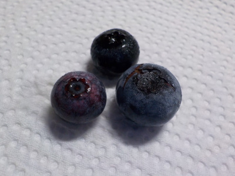
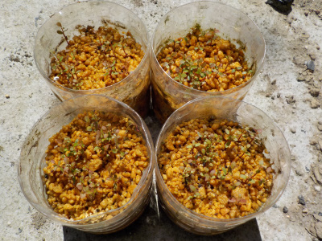
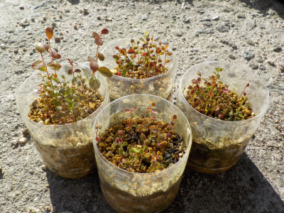
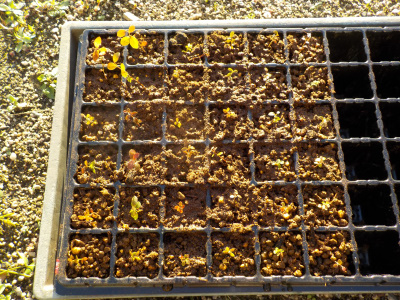
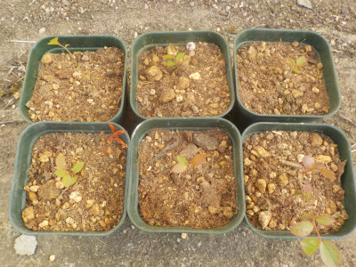
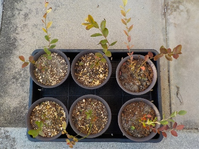
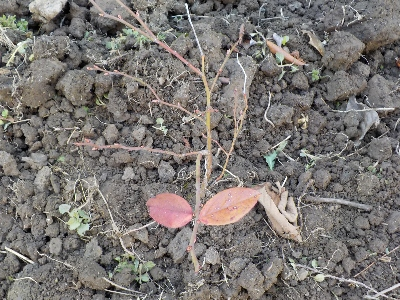
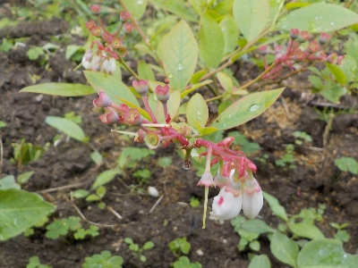
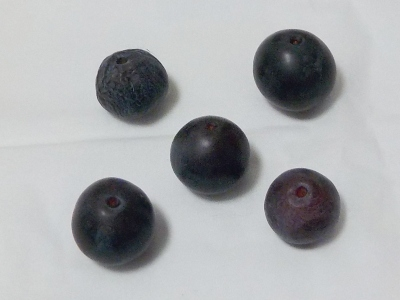

ブルーベリー狩りに行きました。
更新日 : 2021/08/01

お土産に持って帰ったブルーベリーから、確実に親木の種類が違いそうな3種類を選んで種を採りました。
近いうちに種蒔きしようと思います。
紅葉が綺麗で背丈の低いブルーベリーが出来たらいいな。
まだこれが発芽するかどうかも分かりませんが、どうなるのかわからないのが楽しみでいいですね。
更新日 : 2021/08/01

お土産に持って帰ったブルーベリーから、確実に親木の種類が違いそうな3種類を選んで種を採りました。
近いうちに種蒔きしようと思います。
紅葉が綺麗で背丈の低いブルーベリーが出来たらいいな。
まだこれが発芽するかどうかも分かりませんが、どうなるのかわからないのが楽しみでいいですね。
更新日 : 2022/04/17

小さいのが沢山生えましたが、小さすぎて何も出来ません。
2センチくらいの大きさになって欲しいです。
更新日 : 2022/10/08

種まきして育てたブルーベリーです。手でつまんで植替え出来そうな大きさに成長しました。

沢山あって全部は植替え出来ないので、ペットボトル2つから大きいサイズのもの36本をセルトレイに植えました。
それそれ個性的なブルーベリーに育って欲しいです。
更新日 : 2023/06/03

ペットボトルに種を蒔いて、セルトレイに植え替えて、鉢上げしました。
なんか無駄な作業をしたなと今思っています。植木鉢やプランターに種を蒔いて、大きくなったら鉢上げの方が良かったと思います。
ペットボトルは水やりしなくていいから楽で便利だと利用していましたが、その後の作業が多くなるし、根っこがちゃんと育たないし、成長が遅いと感じています。
ブルーベリーに関してはペットボトルはもう使わないと思います。
更新日 : 2024/10/26

あんまりかまっていないですが、普通に育ってます。
ここまで育ったら後は急激に大きくなるんじゃないかなーと期待しています。
どんな木に育つか楽しみだなー。
普通に育つと思ったら、また種蒔きしてもいいな。
更新日 : 2026/03/20

いつまでも鉢で育てても大きくならないし、水やりも面倒なので地植えにしました。
植える場所もそんなにないので、6本を窮屈な感じで1列に植えました。
ギュウギュウだけど花が咲いたり実が出来たり紅葉したら、きっとキレイ。
更新日 : 2026/05/04

1本だけですが実生苗に花が沢山咲きました。この実が美味しかったら親株候補になりますね。
美味しくなくても花付きがいいので、庭木にピッタリ。高さが伸びなかったらいろんなところに植えれそう。
実生はいろいろ想像出来て楽しいですね。
更新日 : 2026/07/14

約5年かかって実が食べれるようになりました。どんな味か期待しながら食べました。
結果は、奇跡的にめっちゃ甘いブルーベリーではなかったです。普通にブルーベリー。
同じ木の実ですが、甘いものもあれば酸っぱいものもありました。とっても普通。
実生は不味いとか実が少ないとか聞きましたが、意外と普通でちょっと拍子抜けでした。
今まで我が家に赤い実系のブルーベリーはなかったので、ちょっと増やしてもいいかな。
大量増殖が可能ですが、そんなに増えても困りますよね。